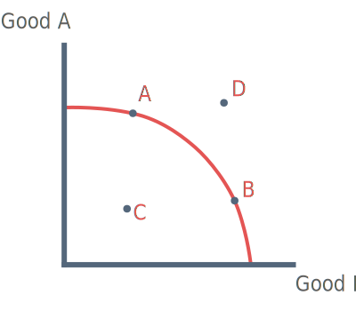

Guide to the PPF
The PPF curve depicts the maximum output possibilities for two goods.
A point that lies on the PPF indicates that it is impossible to produce more of one good without producing less of the other.

Producing either point A or B carries opportunity cost.
Point C: Not all resources are being utilised.
Points beyond PPF: Cannot be produced using existing resources.
Factors shifting the PPF outwards
1) New Resources
2) Improving technology = increased productivity
3) Increased supply of labour (through increase in population)
4) Improvements in human capital through investment in education.
5) Better management of resources (through division of labour).
6) Changing attitudes encouraging entrepreneurialism
Factors shifting the PPF inwards
1) Existing machinery (capital) not being maintained
2) Resources run out E.g. emigration away from countrires e.g. Syria
3) Erosion of infrastructure e.g. This could be due to war or natural disaster.